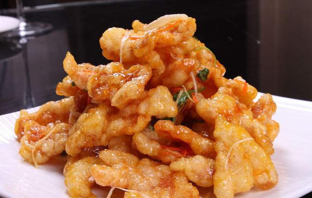
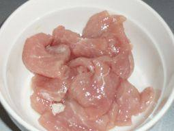
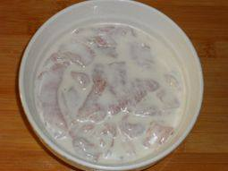
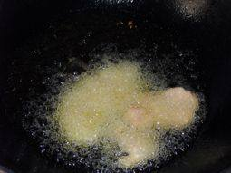
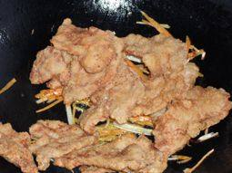
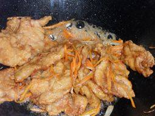
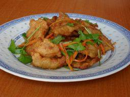

A recipe for Double Cooked Pork Slices
The taste of hometown that northeast people are reluctant to give up most.Today to introduce to you is one of the most classic northeast dishes: pot wrapped meat.The traditional pot meat is golden in color, and the finished products are sour and sweet in taste, crisp and delicious, burnt outside and tender inside.

The material prepared
Pork tenderloin 300 grams, potato starch 150 grams, white sugar 100 grams, vinegar 100 grams, soy sauce, salt, sesame oil, Onions, ginger, garlic, coriander amount.
Production steps

Wash the tenderloin and cut it into slices about the thickness of the back of a knife. Pour in the cooking wine, pepper and salt.

Cover the meat slices with potato starch on both sides, and put them into a container containing the remaining potato starch. Add water and 1 tablespoon of oil and mix well.

Pour the oil into the wok and heat up to 70% heat. Fry the meat pieces in the wok one by one until bubbling.

Dish out the Fried meat in turn.Heat the wok to 90% heat again, that is, there is a little smoke coming from the oil surface.(15 to 20 seconds)

Pour out the oil, leaving very little bottom oil (about 1 spoon), add rice vinegar, half a teaspoon of salt and sugar, medium fire boil until some sticky bubbles into Fried meat slices and all seasoning silk, turn the fire quickly stir fry, until sauce wrapped in meat slices can be off the fire spoon.(add sliced meat and stir for about 10 seconds.)

Dish out.A northeast pot wrapped meat is ready!